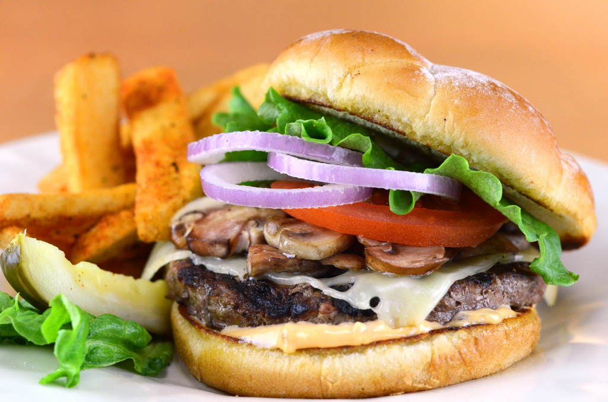

Hamburger

description
Nothing beats a simple hamburger on a warm summer evening!
Ground beef is blended with an easy to prepare bread crumb mixture.
Pile these burgers with your favorite condiments, pop open a cool drink and enjoy!
Ingredients
- 1 egg
- ½ teaspoon salt
- ½ teaspoon ground black pepper
- 1 pound ground beef
- ½ cup fine dry bread crumbs
Directions
- Preheat an outdoor grill for high heat and lightly oil grate.
- In a medium bowl, whisk together egg, salt and pepper. Place ground
beef and bread crumbs into the mixture. With hands or a fork, mix
until well blended. Form into 4 patties approximately 3/4 inch thick.
- Place patties on the prepared grill. Cover and cook 6 to 8 minutes per side,
or to desired doneness.